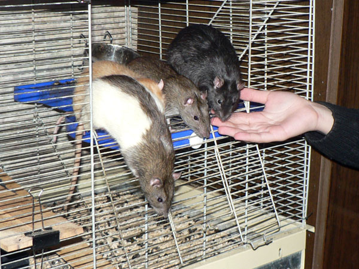
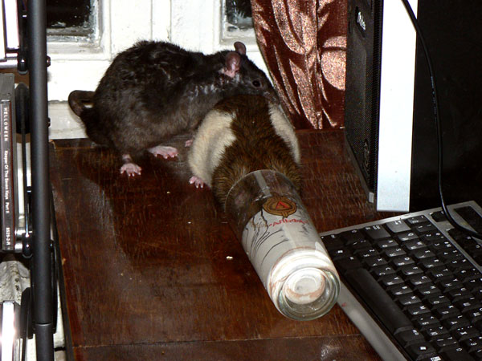
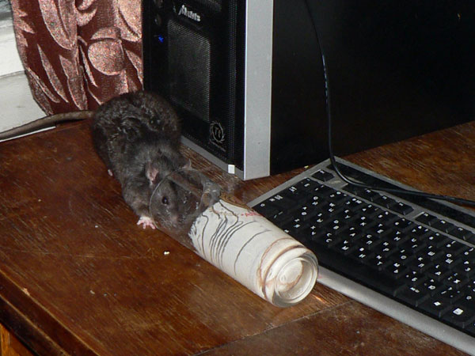
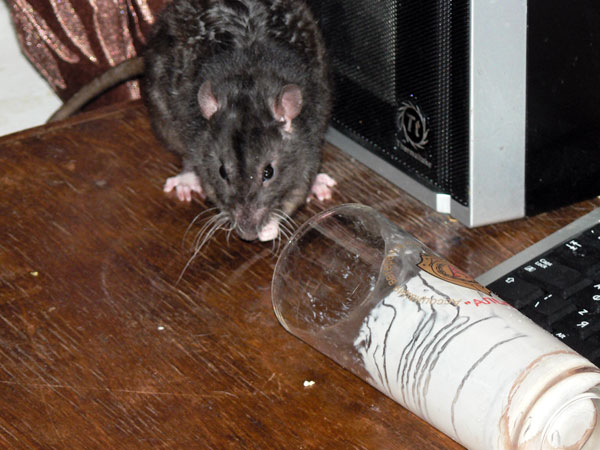
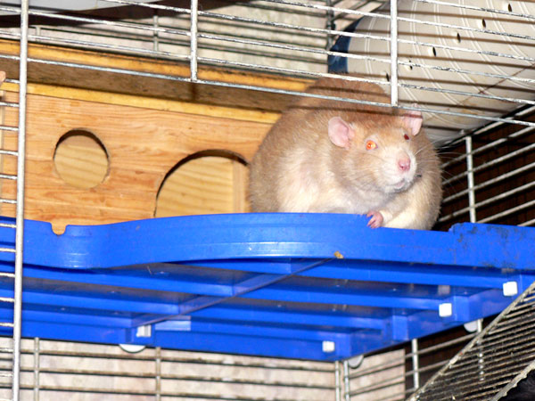

Октябрь 2008

Склад наверху шкафа, который устроил себе дон
Румата. Остальные туда не лазят.
Прим: это — далеко не самый полный запас еды, который там был.

Эрик: — Ничего, сойдет. А темного пива нет?

— Нас всех погладьте, оптом, пожалуйста!
Слева направо: дон Румата, Эрик замаскировался, дон Рэба и Нагваль Никодим.

Сатир: — Дон Румата, а мне кефир останется?

Сатир Верещагин: — Занимаю очередь...

Дон Румата: — Я все.
Сатир: — Понял, приступаю.

Сатир: — Что вы это на меня смотрите?

— Ща все оближу...

— Гм... Все не смог. Не лезет.

Сатир: — Ладно, пойду погулять. Или поспать...

Эрик: — Высоко сижу, далеко гляжу...

Харитон: — Эрик, а что ты тут сидишь и глядишь?